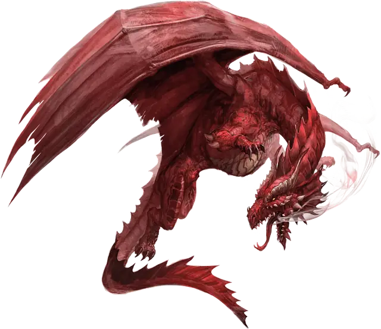

Взрослый красный дракон
Adult Red Dragon
Огромный Дракон (Цветной), Хаотичный Злой

Класс Защиты 19 Инициатива +12 (22)
Хиты 256 (19к12 + 133)
Скорость 40 футов, Полёта 80 футов, Лазания 40 футов
| мод | спас | ||
|---|---|---|---|
| СИЛ | 27 | +8 | +8 |
| ЛОВ | 10 | +0 | +6 |
| ТЕЛ | 25 | +7 | +7 |
| мод | спас | ||
|---|---|---|---|
| ИНТ | 16 | +3 | +3 |
| МДР | 13 | +1 | +7 |
| ХАР | 23 | +6 | +6 |
Иммунитеты Огонь
Чувства Тёмное зрение 120 футов, пассивное Восприятие 23, Слепое зрение 60 футов
Языки Общий, Драконий
Опасность 17 (18 000 опыта или 20 000 опыта в Логове; БВ +6)
Особенности
Легендарное сопротивление (3/день, или 4/день в Логове). Если дракон проваливает спасбросок, он вместо этого может в нём преуспеть.
Действия
Мультиатака. Дракон совершает три атаки Раздиранием. Он может заменить одну из этих атак использованием Сотворения заклинаний (Палящий луч).
Раздирание. Бросок рукопашной атаки: +14, досягаемость 10 фт. Попадание: 13 (1к10 + 8) Рубящего урона плюс 5 (2к4) урона Огнём.
Огненное дыхание (Перезарядка 5–6). Спасбросок Ловкости: Сл 21, каждое существо в 60-футовом Конусе. Провал: 59 (17к6) урона Огнём. Успех: Только половина урона.
Сотворение заклинаний. Дракон сотворяет одно из следующих заклинаний, не нуждаясь в Материальных компонентах (заклинательная характеристика — Харизма, Сл спасброска заклинаний 20, +12 к попаданию атак заклинаний):
Неограниченно: Обнаружение магии, Палящий луч, Приказ, версия 2-го уровня
1/день: Огненный шар
Легендарные действия
У этого существа есть 3 использования Легендарных действий (или 4 использования в его Логове); оно может немедленно после окончания хода другого существа потратить одно использование, чтобы совершить одно из следующих действий. Существо восполняет все потраченные использования в начале каждого своего хода.
Аура властности. Дракон использует Сотворение заклинаний (Приказ, версия 2-го уровня). Дракон не может совершить это действие снова до начала своего следующего хода.
Огненные лучи. Дракон использует Сотворение заклинаний (Палящий луч). Дракон не может совершить это действие снова до начала своего следующего хода.
Наскок. Дракон перемещается на расстояние вплоть до половины своей Скорости и совершает одну атаку Раздиранием.
Бонус мастерства +6
Среда обитания Горы, Холмы
Сокровища Любые
Красные драконы
Драконы жадности и опустошения
Красные драконы берут всё, что захотят, и обращают в пепел всех, кто осмеливается встать на их пути. Однако им всегда нужно больше — больше магии, земель, сокровищ и всего остального, что подогревает их жестокие амбиции.
Эти драконы устраивают свои логова среди крутых скал и вулканов. В своих владениях они собирают и тщательно охраняют груды сокровищ. Как правило, они прекрасно помнят содержимое своей коллекции и знают, где лежит каждый предмет. Если хотя бы один предмет из клада пропадает, красные драконы впадают в ярость и не знают покоя, пока не вернут свои сокровища назад и не сожгут воров.
Красные драконы считают себя величайшими из всех драконов и, следовательно, величайшими из всех существ. Так они видят мир: грабёж и завоевание — их право, лучшее место для всех сокровищ — их кладовые, а служба им — наивысшая привилегия для остальных.
Взрослые красные драконы — тираны, подчиняющие себе обширные земли, командующие целыми армиями последователей или владеющие значительными магическими ресурсами. Они редко обращают внимание на дела и притязания меньших народов, и могут считать даже крупные города частью своих владений. Большинство красных драконов, однако — правители небрежные. Они могут проводить десятилетия в своих логовах, занимаясь накоплением сокровищ, решением магических проблем или созданием удобств для себя; когда же они вновь обратят внимание на свои земли, многое может сгореть дотла, если драконам не понравится увиденное.
Логова красных драконов
Красные драконы устраивают свои логова в жарких труднодоступных местах, таких как вулканические горы, выжженные земли и развалины, отобранные у других существ.
Местность, в которой находится логово взрослого или древнего красного дракона, изменяется из-за его присутствия, что создаёт следующие эффекты:
• Сжигающий зной. Область в пределах 1 мили от логова — зона экстремальной жары. Горящее существо или объект получает дополнительно 1к4 урона Огнём в начале каждого своего хода.
• Тлеющая дымка. Область в пределах 1 мили от логова окутывают облака пепла. Видимость в этой области Слабо заслонена. Каждый раз, когда существо, кроме самого дракона и его союзников, завершает Долгий отдых в этой области, оно должно совершить спасбросок Телосложения Сл 15; при провале оно Отравлено на 1 час.
Если дракон умирает или перемещает своё логово в другое место, все эти эффекты мгновенно исчезают.